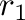
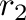
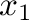
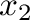
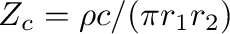
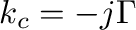
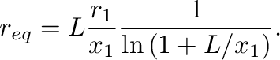
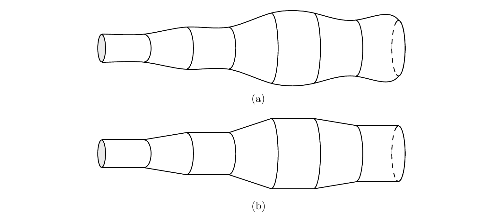
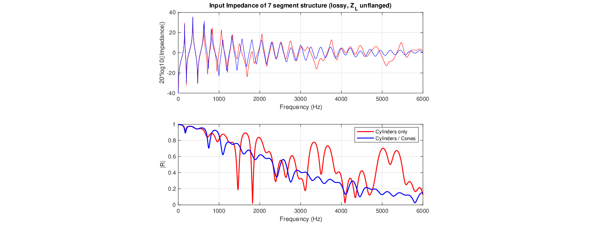

The process outlined earlier to derive the transfer matrix for a cylinder can be repeated for a conical segment. The result is more complicated due to the fact that the characteristic impedance for spherical waves is frequency- and position-dependent.
where  and  are the radii at the input and output planes,
respectively, and  and  are the distances between the apex of
the cone and the input and output planes,

and
 is the complex wavenumber. In this case, losses are
evaluated at the equivalent radius (Chaigne and Kergomard, 2013):

(15)
The combination of cylindrical and conical segments can better approximate the actual geometry of an arbitrary structure, as seen in Fig. 8.
Figure 8:
A non-uniform bore (a) and its approximation in terms of cylindrical and conical sections (b).

Figure 9:
Input impedance (top) and reflectance (bottom) magnitude for 7 segment structure with losses and unflanged, cylinders only vs. cylinders and cones (see example5.m script).

Presented at the 180th Meeting of the Acoustical Society of America, 8-10 June 2021 by Gary P. Scavone.